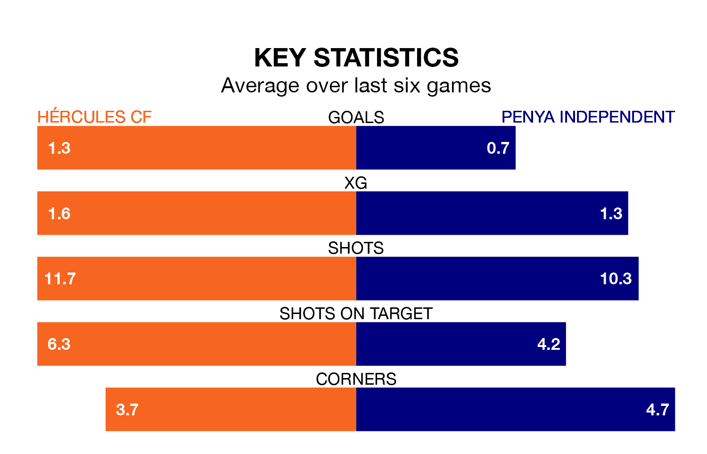

Mid-season relegation candidates Penya Independent face a challenge away against high-flying Hércules CF at the Estadio José Rico Pérez on Sunday.
Penya Independent are 17th in the Segunda División RFEF Group 3 table, and have picked up three wins and seven draws in their 22 games to date.
Hércules, meanwhile, are third in the standings with 42 points, having won 13 and drawn three, and are level on points with table-toppers CF Badalona.
With 17 goals in 22 games so far this season, Penya Independent are the league's second-lowest scorers with 0.8 goals per game. And they are conceding more than average, letting in 34 goals at a rate of 1.5 per game.
Hércules, meanwhile, are above average scorers, with 1.6 goals per game, compared to a league average of 1.2. They have conceded 1.0 goal per game.
The hosts are in mixed form in the Segunda División RFEF Group 3, with three wins and three losses from their last six games.
With a win and two draws over that period, the away team's form is worse – they have taken five points from 18, compared to Hércules's nine.
Hércules's last match was on February 10, a 2-0 win against Andratx, with Carlos De la Nava García and Marcos Ambrosio Mendes Singa getting the goals for Hércules.
Penya Independent drew 1-1 with CE Europa last time out, on February 11, with Jaime Isuardi Fernández on the scoresheet.
Updated: 12:06 (UTC), 15/02/24